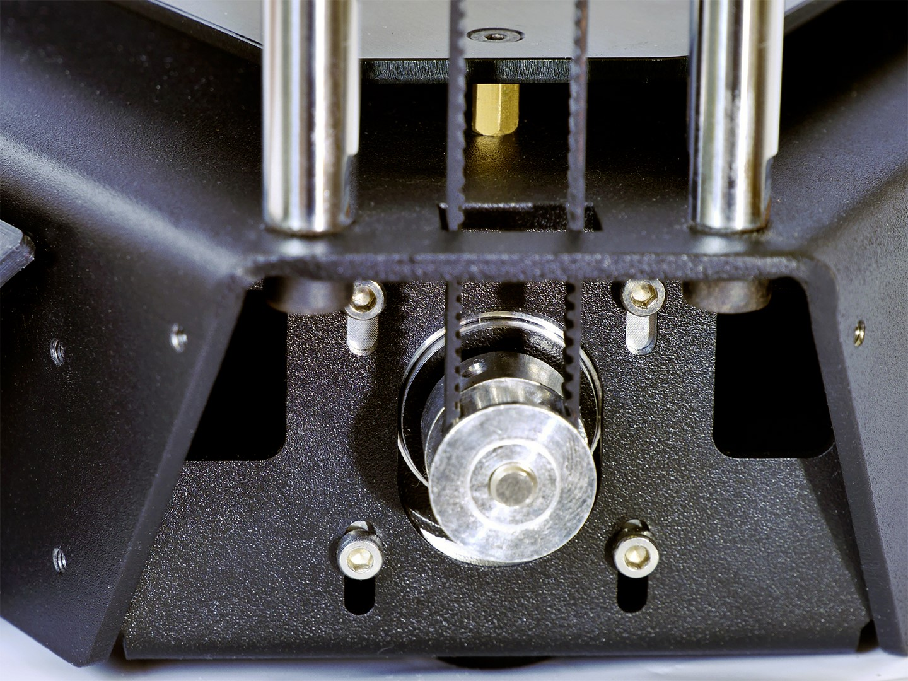
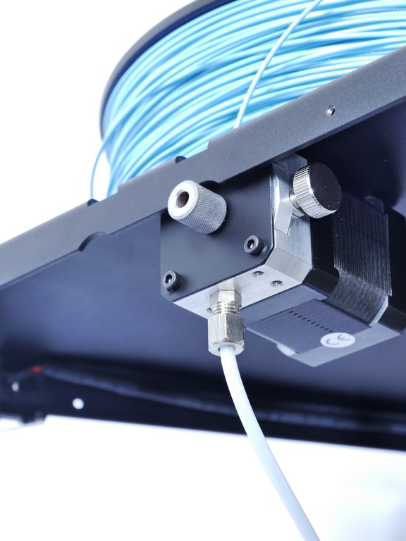

L'imprimante 3d est composée d'une carte éléctronique 32 bits adaptés aux modes de déplacement sans perte de qualité. En effet la carte eMotronic cadencé à 96Mhz permet un calcul fluide du passage de l'espace cartésien à la cinématique Delta. Les connecteurs en façade ainsi que la prise de branchement rapide offrent une grandes facilité d'assemblage et d'usage de cette machine.
On à choisit cette imprimante 3d car elle à une structure rigide et fiables grâce à deux blocs en acier plié qui composent la structure et limite grandement le nombre de sous-ensemble et de petites pièces nécessaires à l'assemblage, offrent ainsi une grande rigidité et une faciliter d'assemblage.
 Cette imprimante 3d à un systèmes d'extrusion précise et fiables avec un éxtrudeur débrayable pour retirer ou recharger le filament avec une simple pression des doigts,accompagnement manuelle du filament avec une roue usiner permettant un debit très précis. Pas de jeu possible ou d'éspace vide sur le passage du filament, nous pouvons ainsi malgré le systeme d'entrainement déporté, travailler tout les types de matériaux disponible y compris les fléxibles.
On peut monter cette imprimante en 3 heures et si il y a un problemes techinque,il y a un support technique téléphonique gratuit. Le plateau chauffant chauffent jusqu'a 100°C. Les differentes caracteristiques de l'imprimante sont: